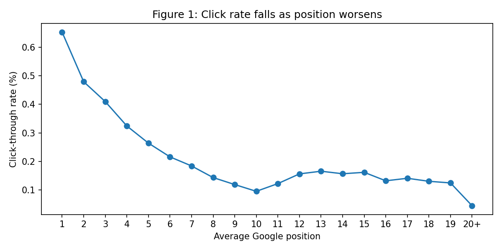
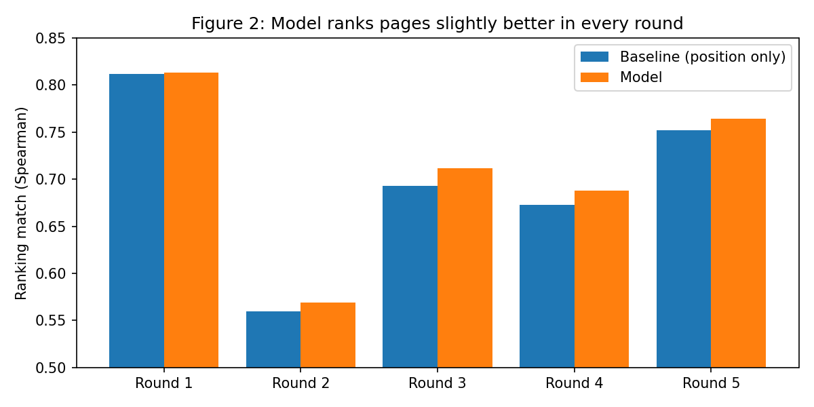
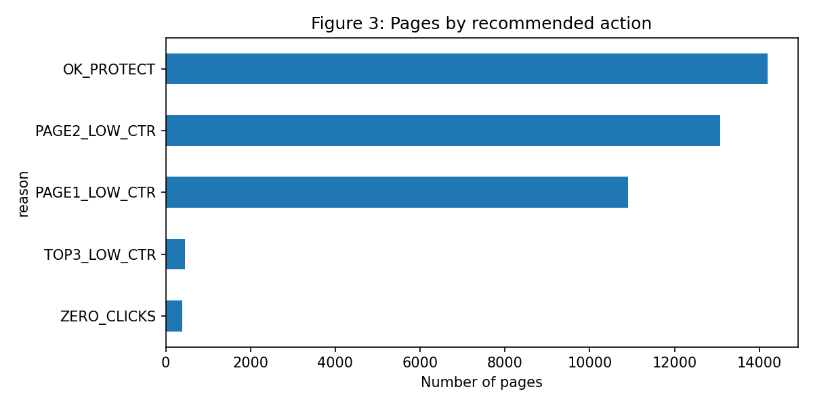
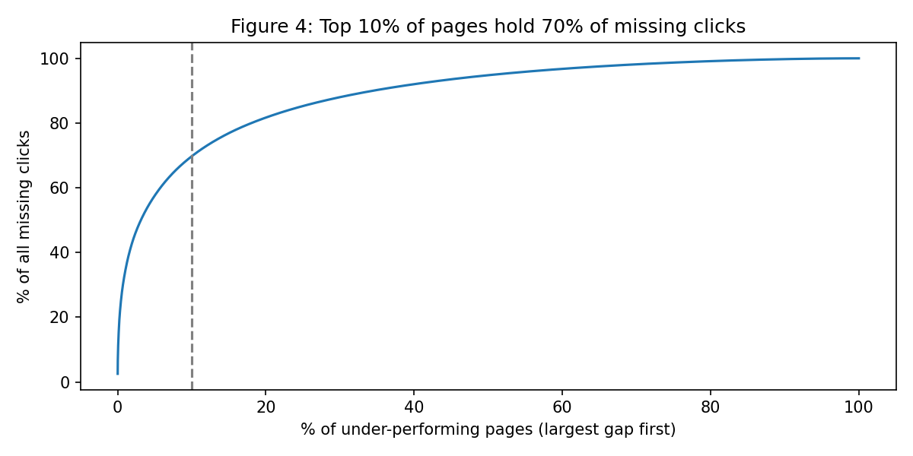

Finding Pages That Under-Capture Clicks: A CTR Opportunity Score for Content Prioritisation
Abstract
Content teams cannot review every page, so they need to know which visible pages are getting fewer clicks than their search position would suggest. Using a 90-day, query-level release of the FlyRank internship warehouse (2.27 million query–page rows across 39,020 pages), I estimated each page’s expected clicks from its search positions and compared it with the clicks it actually received. A position-only baseline was compared against a gradient-boosted model that adds query and page features, using 5-fold validation that holds out whole clients. The model ranked pages slightly but consistently better than the baseline (Spearman 0.709 vs 0.698, better in 5 of 5 folds), while not reliably reducing click-count error. The resulting opportunity list is highly concentrated: the top 10% of under-performing pages account for 69.7% of all estimated missing clicks, and each page carries a reason code that points to a metadata, content, or monitoring review.
1Introduction and problem statement
A page that appears often in search results but rarely gets clicked is a missed opportunity. Its visibility is already earned; what is lacking is the reason for a searcher to choose it. Improving a title, a meta description, or the match between the page and the searcher’s intent is often cheaper than earning a better ranking from scratch.
The difficulty is prioritisation. A content team managing tens of thousands of pages has limited editorial time. This project supports one decision: which pages should be reviewed first, and what kind of review does each need?
To answer it, I asked: given where a page appears in search, how many clicks would we normally expect, and which pages fall furthest below that expectation? The output is a ranked list of pages with a recommended action for each, rather than a claim about why any page under-performs.
2Data
Release. FlyRank Internship pseudonymised warehouse release v20260703 (frozen snapshot exported 3 July 2026), accessed through Hugging Face. Clients, pages, keywords and queries are represented only by salted hash IDs. No client names, domains, URLs or query text appear in this paper.
Tables used.
fact_content_query_90d: the main table. One row per client, page and query hash, with impressions, clicks and average position over a fixed 90-day window. This is the level at which all modelling was done.dim_content: page-level attributes (word count, content type, main search intent, keyword competition, search volume), joined on client and page hash.fact_content_daily_performance(latest-month sample): used only for initial exploration.
Date window. 2 April 2026 to 30 June 2026 (90 days).
Exclusions and why.
- Rows with zero impressions, because a click rate cannot be computed for them.
- Rows with an average position below 1. The best possible search position is 1, so these values are invalid and were treated as data errors.
- For page-level evaluation and ranking, pages with fewer than 500 impressions in the window, because click rates on very few impressions are too noisy to act on.
After exclusions, 2,274,658 query–page rows remained, covering 52 clients. 39,020 pages met the 500-impression threshold.
Why query level, not page level. An early page-level analysis produced an implausible pattern in which pages at position 1 had lower click rates than pages at position 4. Repeating the analysis at query level restored the expected decline in click rate with position (Figure 1). Averaging one page’s many queries into a single position blurs the relationship, so all later steps work at query level and sum up to pages afterwards.
A note on lane choice. My provisional lane in Week 3 was Refresh / Content Opportunity Scoring (notebook w03 in the repo). For the capstone I moved to CTR / Engagement Opportunity Scoring, because the query-level table supports a clear expected-versus-actual comparison and a directly actionable output.
3Methodology
Label
The target is the click-through rate (CTR) of each query–page row: clicks divided by impressions. Rows are weighted by impressions during training, so a row seen 10,000 times counts more than one seen 10 times.
Baseline
For each position bucket (1 to 19, and 20+), the baseline computes the pooled CTR in the training data. A row’s expected clicks are its impressions multiplied by the CTR for its bucket. This represents the simple rule “pages at this rank normally get this share of clicks.”
Model
A histogram gradient-boosting regressor (scikit-learn, 200 iterations, random_state=42) predicting CTR from eight features:
- Search features: average position, query length in words, query length in characters.
- Page features: word count, content type, main search intent, keyword competition, keyword search volume.
No feature is derived from clicks, so the model cannot see the answer it is predicting.
Validation design
I used 5-fold grouped cross-validation with client as the group. In each fold, every row from roughly a fifth of the clients is held out, and both the baseline curve and the model are fitted only on the remaining clients. This tests whether the approach generalises to clients it has never seen, which is closer to real use than a random row split.
Evaluation is done at page level (pages with at least 500 impressions in the held-out clients) using two metrics:
- Average absolute error in predicted clicks per page (lower is better).
- Spearman rank correlation between predicted and actual clicks (higher is better). This matters most here, because the output is a ranking.
Leakage checks
- The join to
dim_contentwas checked to leave the row count unchanged (2,274,658 before and after), so no rows were duplicated. - The baseline position curve is learned only from training clients in every fold.
- For the final ranking, every page is scored out of fold: its expected clicks come from a model that never saw that page’s client.
Opportunity score and reason codes
For each page, missing clicks = expected clicks − actual clicks, summed across its queries. Pages are ranked by missing clicks, largest first. Each page then receives one reason code from simple rules based on its impression-weighted average position:
| Reason code | Rule | Recommended review |
|---|---|---|
| ZERO_CLICKS | 0 clicks and at least 5,000 impressions | Monitoring: check the page and tracking |
| OK_PROTECT | Actual clicks ≥ expected clicks | None: avoid changes that could hurt it |
| TOP3_LOW_CTR | Below expected, average position ≤ 3 | Metadata: rewrite title and meta description |
| PAGE1_LOW_CTR | Below expected, average position 3–10 | Metadata and intent: improve snippet and match what searchers want |
| PAGE2_LOW_CTR | Below expected, average position > 10 | Content: improve the page to reach page 1 first |
4Results
Click rate falls with position

Model versus baseline on held-out clients
Table 1. Page-level results for each fold (same split for baseline and model).
| Fold | Test pages | Baseline error | Model error | Baseline Spearman | Model Spearman |
|---|---|---|---|---|---|
| 1 | 10,552 | 8.212 | 7.436 | 0.812 | 0.813 |
| 2 | 6,932 | 7.272 | 8.959 | 0.560 | 0.569 |
| 3 | 7,286 | 6.947 | 6.483 | 0.693 | 0.712 |
| 4 | 6,695 | 9.904 | 9.611 | 0.673 | 0.688 |
| 5 | 7,555 | 7.970 | 8.116 | 0.752 | 0.764 |
| Average | 7,804 | 8.061 | 8.121 | 0.698 | 0.709 |
The model achieved a higher rank correlation than the baseline in all five folds, by between 0.001 and 0.019. On click-count error it was better in three folds and worse in two, and slightly worse on average, driven mainly by fold 2. Fold-to-fold variation (Spearman from 0.56 to 0.81) is larger than the gap between methods, which shows how much results depend on which clients are held out.

The conclusion is that position explains most of the variation in click rate. Query and page features add a small, consistent improvement in ordering pages, which is what the ranking uses, but they do not make click counts reliably more accurate.
How pages are distributed across actions

The opportunity is concentrated
The top 10% of under-performing pages account for 69.7% of all estimated missing clicks.

5Limitations and honest framing
- Observational, not causal. “Missing clicks” is a gap between observed clicks and what similar positions received in this data. It does not prove that changing a page will recover those clicks, and nothing here explains how Google ranks pages.
- Decision support, not automation. The list says where to look first. A person should still review each page before changing it.
- One 90-day window. The query table covers a single fixed window, so there is no time-based validation and no evidence of how stable these gaps are over time.
- Few clients. Only 52 clients have query-level data. Results vary noticeably between folds, so the small model gain should be read as directional.
- Averaged positions. Each row uses a 90-day average position. A page that moved during the window is represented by one number.
- Heuristic thresholds. The 500-impression cut-off, the 5,000-impression zero-click rule and the position bands for reason codes are practical choices, not tuned values.
- Zero-click pages may be data issues. Some ZERO_CLICKS pages may reflect tracking or reporting gaps rather than real behaviour, which is why their action is “check” rather than “rewrite”.
- Low overall click rates. CTR is under 1% even at position 1 in this release. I report this as observed and do not speculate on the cause.
6Ranked recommendations
The action playbook, in priority order:
- Start with the top of the list. Because the opportunity is concentrated, reviewing roughly the top 10% of under-performing pages (about 2,500 pages) addresses about 70% of the estimated gap.
- Within that group, do TOP3_LOW_CTR pages first. They already rank highly, so a title and meta description rewrite is the lowest-effort change with the clearest expected upside.
- Then PAGE1_LOW_CTR pages. Review the snippet and check whether the page answers the intent behind its main queries.
- Check ZERO_CLICKS pages before editing them. Confirm the page is live, indexed and tracked correctly.
- Treat PAGE2_LOW_CTR pages as content projects. A better snippet helps little beyond page 1, so the first goal is improving the content.
- Leave OK_PROTECT pages alone unless there is another reason to change them.
Table 2. The ten pages with the largest estimated missing clicks (pseudonymised IDs).
| Rank | Page ID | Impressions | Clicks | Expected | Avg position | Missing | Reason |
|---|---|---|---|---|---|---|---|
| 1 | content_15168cd1c94e3529 | 311,895 | 178 | 4,476 | 3.5 | 4,298 | PAGE1_LOW_CTR |
| 2 | content_943dc881428182b8 | 606,831 | 344 | 4,120 | 2.0 | 3,776 | TOP3_LOW_CTR |
| 3 | content_d0acf7062bc6b257 | 297,755 | 33 | 1,244 | 2.1 | 1,211 | TOP3_LOW_CTR |
| 4 | content_4c15fe8dc370f3cd | 266,229 | 459 | 1,634 | 3.0 | 1,175 | PAGE1_LOW_CTR |
| 5 | content_c1f764a2f362d1c3 | 352,256 | 54 | 961 | 7.3 | 907 | PAGE1_LOW_CTR |
| 6 | content_7471467133493ce6 | 217,524 | 30 | 856 | 2.8 | 826 | TOP3_LOW_CTR |
| 7 | content_86c96002dd5c69aa | 69,021 | 176 | 945 | 17.7 | 769 | PAGE2_LOW_CTR |
| 8 | content_ba3549b112cc00e0 | 108,012 | 16 | 785 | 4.8 | 769 | PAGE1_LOW_CTR |
| 9 | content_bddfdd871aa09fbe | 156,932 | 9 | 749 | 2.5 | 740 | TOP3_LOW_CTR |
| 10 | content_0a0cdd4071a7ed1c | 80,082 | 140 | 858 | 10.3 | 718 | PAGE2_LOW_CTR |
Example reading: the top-ranked page averages position 3.5 across its queries and would be expected to receive about 4,476 clicks over the window, but received 178. Its first review should be its title and meta description.
7Reproducibility
- Repository: github.com/drishikaaneja/flyrank-ml-internship-starter
- Capstone notebook:
work/capstone.ipynb, which contains every query, model and chart in this paper, in order. - Data access: request access to the gated FlyRank internship warehouse on Hugging Face, create a read token, and store it as a Colab secret. The token is never written in the notebook.
- Tools: Python in Google Colab, DuckDB reading Parquet over
hf://, pandas, scikit-learn (HistGradientBoostingRegressor,GroupKFold), SciPy, matplotlib. - Determinism:
random_state=42for the model;GroupKFoldsplits are deterministic given the data.
8Acknowledgments and data credit
Built on the FlyRank ML Internship dataset (https://flyrank.ai). Thanks to the FlyRank ML internship team for preparing the pseudonymised warehouse and the starter workflow this analysis builds on.